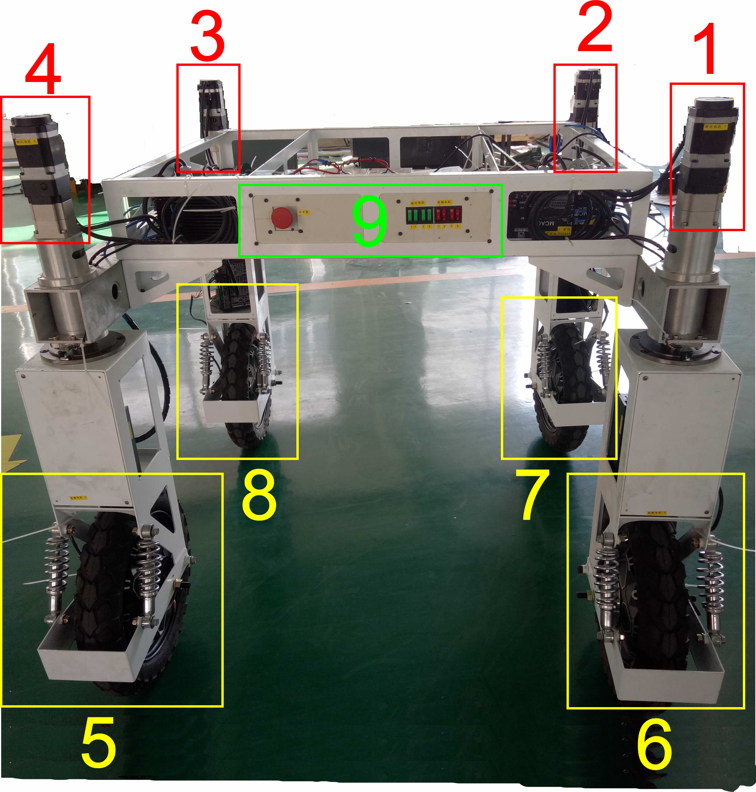
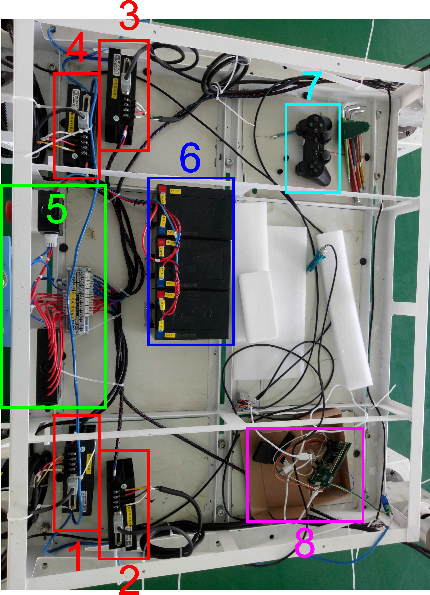
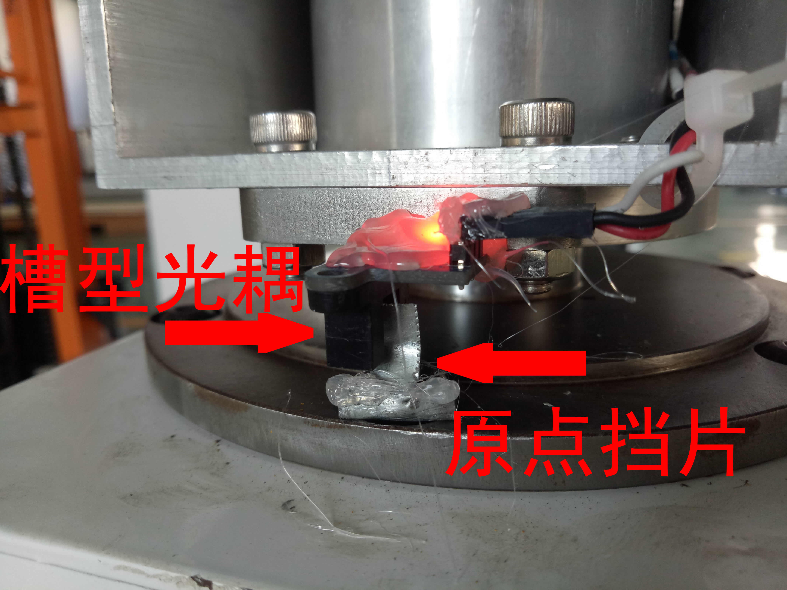
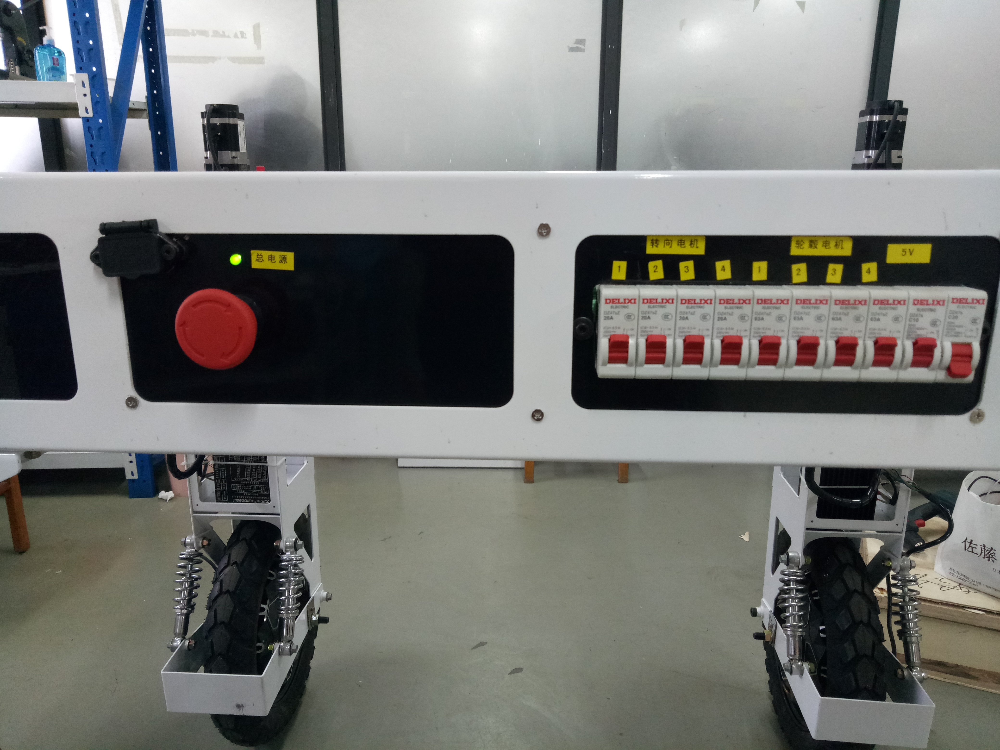
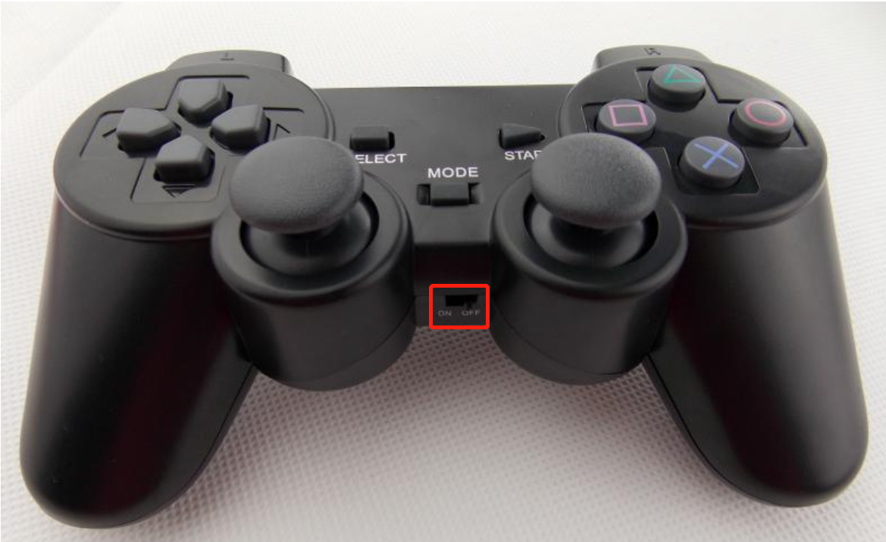
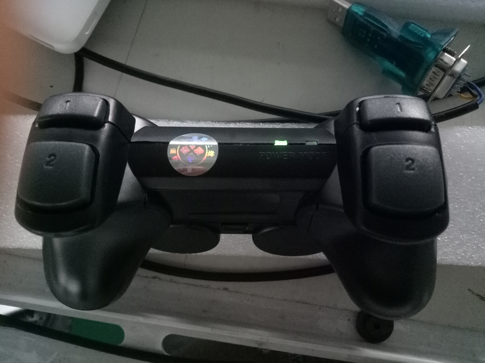
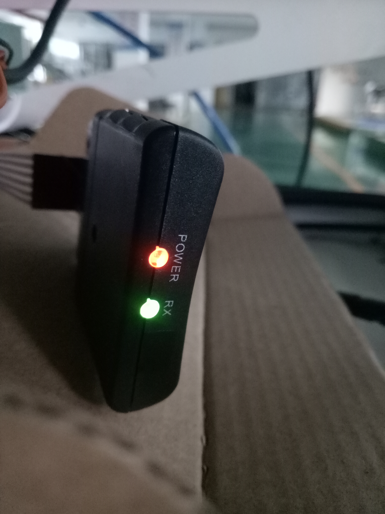
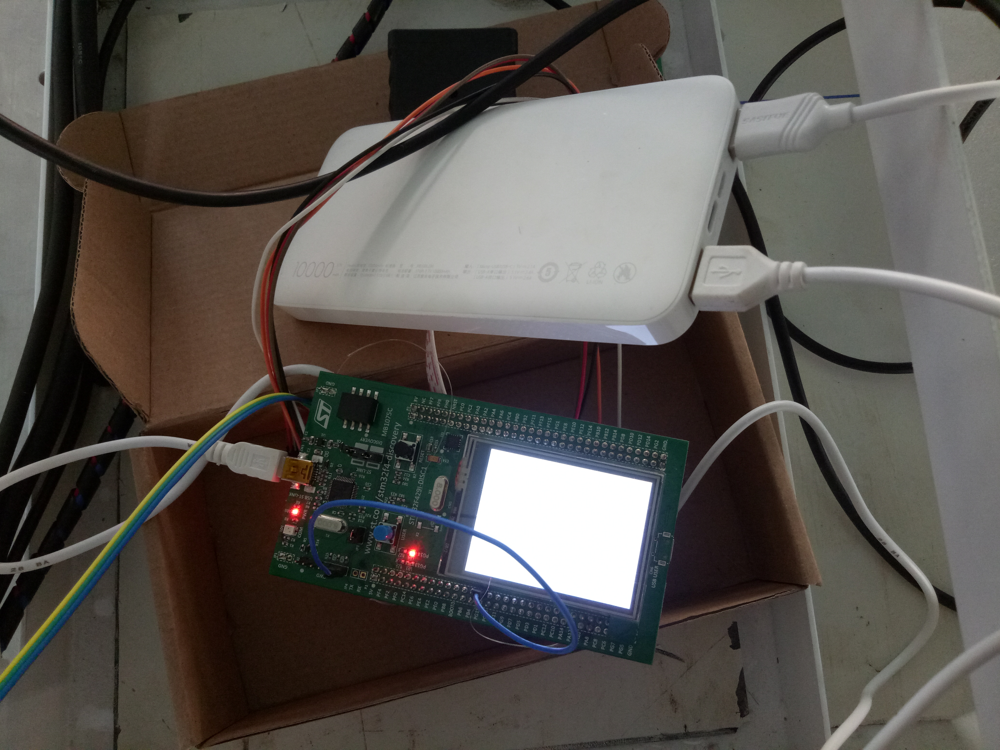

Home
不要因为题目上有“智能”这两个字，就以为这个会自动导航驾使，实际是个很LOW的手动遥控玩具四轮车，仅仅是体积大点。当然其中有个看起来NB的技术“四轮转向”，最后因为不实用抛弃了。 这个项目主要是分“控制器”、“遥控器”、“RS485通信”、“伺服转向”、“无刷驱动轮”几个部分。
有空会慢慢加上各部分的资料，没空的话就当坑了。
先贴下我写的简单使用说明书：
一． 整体结构图

1/2/3/4为四个转向电机+减速机，用于控制各个轮子的方向，转动角度在－90~90度范围。
5/6/7/8为四个轮毂电机，用于驱动小车前进后退。
9为驱动器电源开关，左边为总电源开关，同时做为急停开关，当出现小车无法控制，
可以直接按下总电源开关停止小车，右边为各个电机供电开关。

1/2/3/4为四个转向电机驱动器，5为驱动器电源接线端子处，6为36V铅酸电池，
7为遥控手柄，8为控制开发板。
二． 操作步骤
1. 先将总电源开关向右旋转打开，此时电源指示灯会亮(绿灯)，
然后打开5V开关，接着手动调整四个轮子使得安装在轮毂电机支架上的
槽型光耦灯指示灯亮。具体如下面两个图所示：

2. 然后依次打开“转向电机”和“轮毂电机”的各电源。具体如下图所示：

3. 将遥控手柄(需要2节5号(AA)电池供电)开关打开。
等待遥控手柄绿色灯常亮，开发板LED4（红色）亮，遥控接收器的绿灯和红灯都常亮。
 
 
4. 按下遥控手柄上“START”按键，等待开发板上的红灯交替亮灭，
最后LED3常亮，LED4灭。（有时要多按几次START按键才会有反应）。
5. 按下遥控手柄上的左/右按键进行测试转向电机是否正常，如果不能转向需断电重启。
按下遥控手柄上的上/下按键控制小车前进，后退。
按下“三角”按键加速，“X”按键减速，“方框”按键停止。
======================== 控制器 =======================================
当时选择ARM板是因为“便宜”，实际客户(技校)想要的是西门子PLC进行控制,这样他们可以容易改造。但是因为这个是经过两层转包的，所以当时就没有了解客户的具体需求。 控制器具体型号是“STM32F429-DISC”，MCU速度够快，还带一个显示屏。选这个板了没有选那些“野火”、“正点”等，是因为相关资料都可以从ST官网下载，不用怕“人走茶凉”找不到资料。 现在STM32的库基本转向cube的C++库了，但是由于本从比较笨，使用各种class/template比较麻烦，所以还是坚守原来的基本StdPeriph库(纯C库，随带寄存器定义，可以“提高运行速度”)。